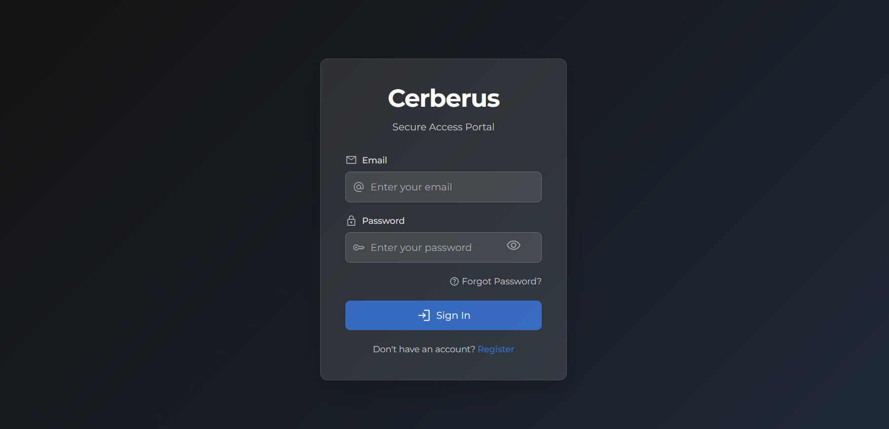

First Launch
Overview
Post-installation verification and initial configuration guide for Oju. These steps ensure proper platform functionality before beginning security monitoring of your entities.
Interface Access
Main Application Interface
URL : https://yourdomain.com
First Access :
-
Open browser to your domain
-
Login page should display correctly

Figure 1. Oju interface

Backup Configuration
Configuration Backup
# Backup critical files
tar -czf Oju-config-$(date +%Y%m%d).tar.gz .env docker-compose.yml
# Backup SSL certificates
tar -czf Oju-ssl-$(date +%Y%m%d).tar.gz nginx/ssl/Database Backup
# PostgreSQL export
docker-compose exec postgres pg_dump -U postgres Oju_db > Oju-db-$(date +%Y%m%d).sql
# Test restoration (optional)
cat Oju-db-YYYYMMDD.sql | docker-compose exec -T postgres psql -U postgres Oju_dbOju is now operational and ready for production cybersecurity monitoring!
For advanced usage and administration, explore the detailed feature documentation and administration guides.